After the completion of this lesson, students will be able to:
Our planet earth is filled with so many species of plants and animals. According to the scientists there are about 70 – 100 lakh species on the earth. The sum total of all these animals is called biodiversity. Bio means life, diversity means variety or different. Thus, bio-diversity means variety of life forms on the earth and the essential interdependence of all living things. When you travel through the forests in the mountain ranges you can see variety of life forms. Forests are abundant with fruit trees and flowers and inhabited by chirping birds, prancing deer and plenty of other animals. All through the literature of ages, it has been mentioned that India is full of forests filled with wildlife. Unfortunately, from then to now, most of these forests have been cut down. This phenomenon is seen all across the world. Forests as a natural resource are decreasing in area in the recent years. In this lesson we are going to learn about deforestation, endangered species, conservation of plants and animals and wildlife sanctuaries and national parks.
Forests are the important renewable resources. They cover about 30 percent of the world’s land surface. They produce oxygen and maintain the level of carbon dioxide in the atmosphere. Forests provide many important goods such as timber, paper and medicinal plants. They control water runoff, protect soil, and regulate climate changes. But the forests all around the world are being destroyed. Destruction of forests in order to make the land available for different uses is known as deforestation. Deforestation has resulted in several ecological imbalances such as increase in temperature, deficiency in rainfall etc. It has also resulted in the extinction of several species of animals and plants.
Deforestation may be caused by nature or it may be due to human activities. Fires and floods are the natural causes for deforestation. Human activities which are responsible for deforestation include agricultural expansion, cattle breeding, illegal logging, mining, oil extraction, dam construction and infrastructure development. Let us study about some of them in this section.
a. Agricultural Expansion
With increasing population, there is an overgrowing demand for food production. Hence, large amount of trees are chopped down for crop production and for cattle grazing. More than 40% of the forests are cleaned to obtain land and to meet the needs of agriculture.
b. Urbanization
With the expansion of cities more land is needed to establish housing and settlement. Requirements like construction of roads, development of houses, mineral exploitation and expansion of industries also arise due to urbanisation. Forests are destroyed to meet all these needs.
c. Mining
Mining of coal, diamond and gold require a large amount of forest land. So, a large number of trees is cut down to clear the forest area. Moreover, the waste that comes out from mining pollutes the environment and affects the nearby plants.
d. Construction of dams
To provide water supply to the increasing population, large size dams are constructed. Hence, a great extend of forest area is being cleared.
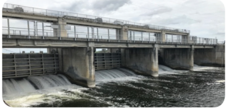
e. Timber Production
We need wood to meet the needs of our daily life. Wood-based industries like paper, match-sticks, furniture need a substantial amount of wood supply. Wood is the most commonly used fuel. Thus, a large number of trees are being cut down for fuel supplies. Some people are involved in illegal wood cutting and destroy more number of trees. This is the main reason for the destruction of some valuable plants.
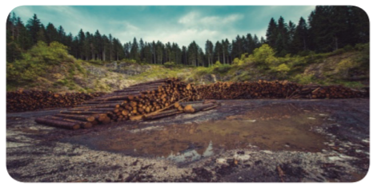
Do you know?
Chipko Movement is primarily a forest conservation movement. The word ‘Chipko’ means ‘to stick’ or ‘to hug’. Sunderlal Bahuguna was the founder of this movement. It was started in 1970s with the aim of protecting and conserving trees and preserving forest from being destroyed.
f. Forest fire
In many forests, fires are usually expected from time to time. They may be caused by humans, accidents or natural factors. Forest fires wipe out thousands of acres of forest land each year all over the world. This has tremendous effects on biodiversity and the economy as well.
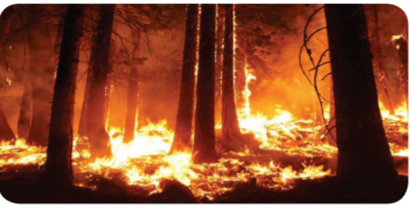
g. Cyclones
Cyclones destroy the trees on a massive scale. They not only destroy the trees but also affect the livelihood of so many people who depend on them.
More to know
Name of the Cyclone |
State |
Year |
Fani |
Orissa |
2019 |
Gaja |
Tamil Nadu |
2018 |
Phethai |
Andhra Pradesh |
2018 |
Ockhi |
Tamil Nadu |
2017 |
Vardah |
Tamil Nadu |
2016 |
There has been a long history of interdependence between man and the forests. Our survival without forest will be very difficult. They supply us the oxygen we need, cause rainfall and provide so many things needed for our life. But increase in population has resulted in the destruction of forests. Every year 1.1 crore hectares of forests have been cut down around the world. In India alone 10 lakh hectares of forests are destroyed which has resulted in so many harmful effects. Let us study about some of them.
a. Extinction of species
Deforestation has resulted in the loss of many wonderful species of plants and animals and many are on the verge of extinction. More than 80 percentage of the world’s species remain in the tropical rainforest. Reports say that about 50 to 100 species of animals are being lost each day as a result of destruction of their habitats.
b. Soil Erosion
Widespread trees in the forests protect the soil from the heat of the sun. When the trees are cut down, soils are exposed to the sun’s heat. Extreme temperature of the summer dries up the moisture and makes the nutrients to evaporate. It also affects the bacteria that helps in the breakdown of organic matter. The roots of the trees retain the water and the top soil which provides nutrients to the plants. When the trees are cut down, soil is eroded and washed away along with the nutrients.
c. Water cycle
Trees suck the water from the roots and release the water into the atmosphere in the form of vapour during transpiration. When trees are cut down the amount of water vapour released decreases and hence there is a decrease in the rainfall.
d. Floods
Trees absorb and store a large amount of water with the help of their roots. When the trees are cut down, the flow of water is disrupted and it leads to flooding in some areas.
Do you know?
Amazon forest is the largest rain forest in the world, located in Brazil. It covers 6000000 square km. It helps to stabilize the earth’s climate and slow global warming by fixing Co2, and producing 20% of the world’s oxygen in the process. It has about 390 billion trees. It is the lungs of the planet.
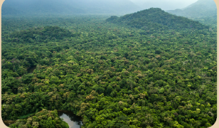
e. Global warming
We inhale oxygen present in the atmosphere and release carbon dioxide as waste. In turn trees absorb the carbon dioxide and provide us the oxygen during photosynthesis. Deforestation reduces the number of trees and hence more amount of carbon dioxide accumulates in the atmosphere. Carbon dioxide along with water vapor, methane, nitrous oxide and ozone forms the green house gases. These gases are responsible for global warming.
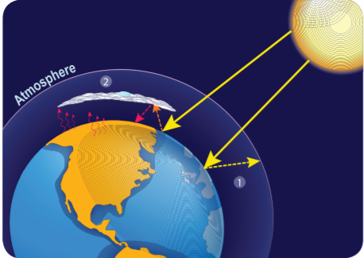
The solar energy falling on the earth’s surface is reflected into the atmosphere. A part of this energy is reflected by the green house gases back to the earth to keep it warm and a part goes into the space. But gases such as methane and carbon dioxide accumulating in the atmosphere trap the heat energy inside the atmosphere leading to increase in temperature. This is called global warming. This results in the melting of glaciers in the polar region and affects the living organisms like polar bear.
f. Destruction of home land
Indigenous people live in and depend on forests for their survival. They get their food and many other resources from the forests. Destruction of forests affects their livelihood .
Activity 1
Collect information about a nearby forest in your area and find out the rare species of plants and animals found there. Collect some pictures of plants and animals which you do not find around you and prepare an album.
As we all know due to deforestation the climate is changing alarmingly in these days and there is no seasonal rainfall. Because of this many cities are facing water scarcity and many of the lands are becoming barren. Water is needed for life to exist on the earth. So, we need to grow forests. Afforestation is the process of planting trees, or sowing seeds, in a barren land to create a forest. Afforestation helps us to create the forests differently from natural forests.
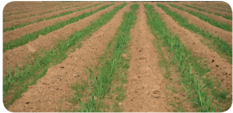
Do you know?
The term social forestry was first used in 1976 by the then National Commission on Agriculture, Government of India. It means the management and protection of forests and afforestation on barren land with the purpose of helping the environment, social and rural development. It is to raise the plantations thereby reducing the pressure on the traditional forest area.
The world is experiencing a great change in the climate in the recent years than ever before. These changes in the climate have given an alarming signal to everyone. To protect our planet earth, afforestation would be a better solution. Importance of afforesatation is given below.
Do you know?
Wangari Maathai founded the Green Belt Movement in Kenya in the year 1977. GBM has planted over 51 million trees in Kenya. She was awarded the Nobel Peace Prize for 2004.
Activity 2
Discuss about afforestation in the class and write a brief report on your discussion.
Reforestation is the natural or intentional replanting of the existing forests that have been destroyed through deforestation. Reforestation may sound similar to afforestation but both of them are not same. Reforestation is replanting of trees in a land area which had lost its forest cover for some reason. But afforestation is growing forest in an area which originally had no tree cover. Reforestation is an effective strategy to fight global warming. In addition to benefiting the climate, reforestation helps in protecting important species of animals. Reforestation helps to rebuild habitat loss and degradation which are the leading threats to the health and endangerment of species.
Activity 3
Observe the important days related to conservation of nature. Also organise a ralley on protecting forest.
Table 22 point 1 Difference between Deforestation and Reforestation
Deforestation |
Reforestation |
When the plants or trees are cut down, it is called deforestation. |
When the plants or trees are grown or planted, it is called reforestation. |
Deforestation has a negative effect on the environment. |
Reforestation has a very good effect on the nature, as it builds the environment. |
Table 22 point 2 Differences between Afforestation and Reforestation
Afforestation |
Reafforestation |
Trees are planted in new areas where there was no forest cover. |
It is practiced in areas where forests have been destroyed. |
One sapling is planted to get one tree. |
Two saplings are planted to replace every felled tree. |
It is practiced to bring more area under forest. |
It is practiced to avoid deforestation. |
Our country is a home for variety of species with rich flora and fauna. Flora is the plant life occurring in a particular area. Fauna is the animal life occurring in a particular area. The Royal Bengal Tigers, the Asiatic Cheetah and several other birds are found in India. But due to various reasons like environmental pollution, deforestation, loss of habitat, human interference, poaching and hunting many animals in India are extinct and many are endangered. Species which no longer exist on earth are called extinct species. E.g. Dinosaurs, Dodo. An endangered species is an animal or a plant that is considered to be at the risk of extinction.
It means that there are only few of them left on the earth and soon they might extinct. It is reported that nearly 132 species of plants and animals are critically endangered in India. Snow leopard, Bengal tiger, Asiatic lion, Purple frog and Indian giant squirrel are some of the endangered animals in India.
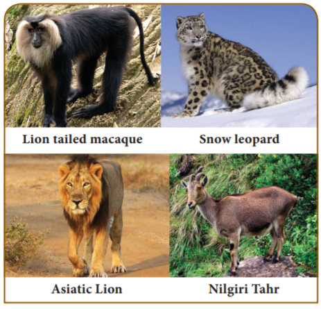
Activity 4
Observe the following days in your school
World Forest Day - March 21
World Water Day - March 22
Environmental Day - June 5
World Nature Conservation Day - July 28
Ozone Day - September 16
Do you know?
Each year, 22nd May is celebrated as World Biodiversity Day. Biodiversity is a term used to describe the different plants, animals, marine life, microorganisms, insects, habitats, ecosystem etc. that make our planet so unique and so fascinating.
Many algae, fungi, bryophytes, ferns and gymnosperms are disappearing with the destruction of forests. And, each disappearing species may take away with it many species of animals and microbes which depend on them for food and shelter. Similarly, list of animals on the verge of being lost is endless. Prawns, oysters, lobsters, crabs, squid, octopus, cuttlefish, beetles, dragonfly, grasshoppers, fish and even frogs are dying by absorbing poisonous gases through their skin. Locust is one insect which has almost disappeared from India. Following animals are getting rare these days.
Table 22 point 3 Endangered plants and animals.
Endangered Plants |
Endangered Animal |
Umbrella tree |
Snow Leopard |
Malabar lily |
Asiatic Lion |
Rafflesia flower |
Lion tailed macaque |
Indian mallo |
Indian Rhinoceros |
Musli plant |
Nilgiri Tahr |
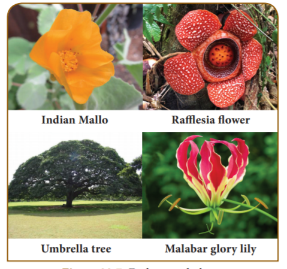
Activity 5
Collect as many pictures of wild plants and wild animals as possible. Prepare a poster showing the endangered species separately.
Whether a particular species is endangered or not is determined by the following ways.
Do you know?
Yeoman Butterfly has been declared state butterfly of Tamil Nadu. This species is endemic to Western Ghats. It is among 32 butterfly species found in Western Ghats.
There are various reasons why a species may become endangered or extinct. Some of them are explained below.
a. Loss of habitat
Trees that provide food and shelter to so many species are destroyed due to human intervention.
b. Over hunting and poaching
Large number of animals are hunted for their horns, skin, teeth and many other valuable products.
c. Pollution
Number of animals are affected by pollutions like air pollution and water pollution. In the recent years more number of animals is affected by wastes in the form of plastic.
d. New habitat
Sometimes animals are taken by people to new habitat where they do not naturally live. Some of them may extinct and some may survive. The new ones may also get attacked by the species already living there and cause their extinction.
e. Chemicals
We use pesticides and other chemicals to get rid of damaging insects, pests or weeds. But they can also poison desired plants and animals if we do not use them correctly.
Do you know?
At one time Dinosaur, ferns and some gymnosperms were wide spread on the earth. They disappeared from the earth, may be due to shortage of space and food or due to climatic change.
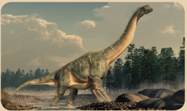
f. Diseases
Diseases due to various unknown reasons may affect the animals and make them extinct.
g. Natural calamities
Animals may also be destroyed due to natural disasters like flood and fire.
Nature is beautiful and it is filled with different plants and animals. For maintaining healthy ecological balance on the earth, animal and plant species are important. They have medicinal, scientific, ecological and commercial value. Each organism on the earth has a unique place in food chain that contributes to the ecosystem. But they are endangered mainly due to human activity. We need to take certain measures to protect them and preserve them.
Do you know?
Planting the native trees like Neem tree, Umbrella tree and Banyan tree in our surrounding will be helpful for the animals. Many birds and animals find shelter in those trees.
In order to preserve the plants and animals, government has taken lot of initiatives and some acts have also been passed to protect them. For example, Project Tiger is a wildlife conservation project initiated in India in 1972 to protect the Bengal Tiger. It was launched on 1st April 1973 and has become one of the most successful wildlife conservation ventures. Corbett National Park was the first National Park in India to be covered under project Tiger. Due to ‘Project Tiger’ the population of Tiger has increased in India from 1400 in 2006 to 2967 in 2018. Apart from this, government has enacted the following Acts.
1. Madras Wildlife Act, 1873.
2. All India Elephant Preservation Act, 1879.
3. The Wild Bird and Animal Protection Act, 1912.
4. Bengal Rhinoceros Preservation Act, 1932.
5. All India Wildlife Protection Act, 1972.
6. Environmental Protection Act, 1986.
The Red Data Book is the file for recording rare and endangered species of animals, plants and fungi. Even some local sub-species that exist within the territory of a state or country are recorded in red data books. Red data book gives important data for observational studies and monitoring programmes on habits and habitats of rare and endangered species. This book is created to identify and protect the species which are about to extinct.
Red Data Book is maintained by the International Union for Conservation of Nature. It is an international organization working in the field of nature conservation and sustainable use of natural resources. It was founded in 1964 with the aim of maintaining a complete record of every species that ever lived. The Red Data Book classifies species mainly into three categories namely, threatened, not threatened and unknown. This book also has information as to why a species has become extinct along with the population trends and its distribution.
The Red Data Book contains colour-coded information sheets like black for species which are extinct, red for species that are endangered and so on. They are arranged according to the extinction risk of many species and subspecies. The following figure gives the colour coded information.
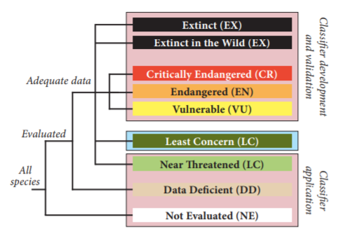
Do you know?
IUCN – International Union for Conservation of Nature WWF – World Wildlife Fund
ZSI – Zoological Survey of India
BRP – Biosphere Reserve Programme
CPCB – Central Pollution Control Board
Do you know?
World Wildlife Day is observed on March 3rd every year.
India, a mega-diverse country with only 2.4% of the world’s land area, accounts for 7-8% of all recorded species, including over 45,000 species of plants and 91,000 species of animals. The country’s diverse physical features and climatic conditions have resulted in a variety of ecosystems such as forests, wetlands, grasslands, deserts, coastal and marine ecosystems which harbour and sustain high biodiversity and contribute to human well being. Four out of 34 globally identified biodiversity hotspots, the Himalayas, the Western Ghats, the North-East, and the Nicobar Islands, can be found in India.
India became a state member of I U C N in 1969, through the Ministry of environment, Forest and Climate Change (M o E F C C). The I U C N India country office was established in 2007 in New Delhi. Red Data Book of India contains the conservation status of animals and plants which are found in the Indian subcontinent. Surveys conducted by the Zoological Survey of India and the Botanical Survey of India under the guidance of the Ministry of Environment, Forest and Climate Change provide the data for this book.
According to WWF (World Wildlife Fund) there has been 60% decrease in the size of population of animals, birds, fish, reptiles and amphibians over the past 40 years. In order to leave something for the future generation, we need to conserve it now. Conservation is the protection, preservation, management of wildlife and natural resource such as forest and water. Conservation of biodiversity helps us to protect, maintain and recover endangered animals and plant species. Conservation is of two types. They are:
It is nothing but conservation of living resources within the natural ecosystem in which they occur. This is achieved by protection of natural habitat and maintenance of endangered species in certain protected areas such as national parks, wildlife or bird sanctuaries and biosphere reserves. In India, there are about 73 national parks, 416 sanctuaries and 12 biosphere reserves.
a. National Parks
National park is an area which is strictly reserved for the betterment of the wildlife. Here, activities like forestry, grazing or cultivation are not permitted. Even private ownership rights are not allowed in these areas. The national parks cover an area of 100 to 500 square kilometers. In these parks a single plant or animal species are preserved.
Table 22.4 National Parks in India
Name |
State |
Established year |
Jim Corbett National Park |
Uttarakhand |
1936 |
Dudhwa National Park |
Uttar Pradesh |
1977 |
Gir National Park |
Gujarat |
1975 |
Kanha National Park |
Madhyapradesh |
1955 |
Sundarbans National Park |
West Bengal |
1984 |
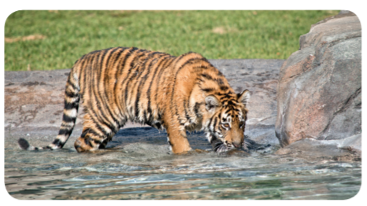
Table 22 point 5 National Parks in Tamil Nadu
Name |
District |
Established year |
Guindy National Park |
Chennai |
1976 |
Gulf of Mannar National Park
|
Ramanathapuram |
1980 |
Indira Gandhi National Park |
Coimbatore |
1989 |
Mudumalai National Park |
The Nilgiris |
1990 |
Mukurthi National Park |
The Nilgiris |
1990 |
b. Wildlife sanctuaries
Sanctuary is a protected area which is reserved for the conservation of animals only. Human activities like harvesting of timber, collection of forest products and private ownership rights are allowed here. Controlled interference like tourist activity is also allowed. The differences between national parks and wildlife sanctuaries are given in Table 22 point 6
Table 22 point 6 Wildlife Sanctuaries in Tamil Nadu
Name |
District |
Established year |
Meghamalai Wildlife Sanctuary |
Theni |
2016 |
Vandaloor Wildlife Sanctuary |
Chennai |
1991 |
Kalakad Wildlife Sanctuary |
Thirunelveli |
1976 |
Grizzled Squirrel Wildlife Sanctuary |
Virudhunagar |
1988 |
Vedanthangal Wildlife Sanctuary |
Kanchipuram |
1936 |
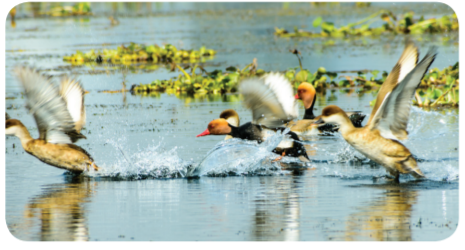
Table 22 point 7 Difference between National Parks and Wildlife Sanctuaries
Wildlife Sanctuary |
National Parks |
Human activitiesare allowed. |
No human activities are allowed. |
Main aim is to protect a particular flora or fauna. |
Flora, fauna or any other objects of historical significance are protected. |
There are no fixed boundaries. |
Boundaries are fixed and defined. |
It is open to the general public |
Not usually open to the public. |
Sanctuaries are usually formed by the order of central or the state government |
National Parks are formed by the state or central legislature. |
A sanctuary can be upgraded to a national park
|
A national park cannot be downgraded to a sanctuary. |
c. Biosphere reserves
Biosphere is a protected area where human population also forms the part of the system. The area of these places will be around 5000 square kilometers. They conserve the eco system, species and genetic resources. These areas are set up mainly for economic development.
Table 22 point 8 Biosphere Reserves in India
Name of Biosphere |
State / Union Territory |
Nanda Devi |
U.P |
Nokrek |
Meghalaya |
Manas |
Assam |
Sunderbans |
West Bengal |
Gulf of Mannar |
Tamil Nadu |
Nilgiri
|
Tamil Nadu |
Great Nicobars and Similipal |
Andaman and Nicobar / Orissa |
Activity 6
Find out the national parks and wildlife santuaries in Tamil Nadu. Visit those places and collect more information about them.
Advantages of In-situ conservation
It is the conservation of wildlife outside their habitat. Establishing zoos and botanical gardens, conservation of genes, seedling and tissue culture are some of the strategies followed in this method.
a. Botanical gardens
It is a place where flowers, fruits and vegetables are grown. These places provide a healthy and calm environment.
b. Zoological parks
Zoological parks are the areas where wild animals are conserved. In India there are about 800 zoological parks.c. Tissue Culture It is a technique of growing plant cells, tissues, organs, seeds or other plant parts in a sterile environment on a nutrient medium.
d. Seed bank
The seed bank preserves dried seeds by storing them in a very low temperature. The largest seed bank in the world is the Millennium Seed Bank in England.
e. Cryo Bank
It is a technique by which a seed or embryo is preserved at a very low temperature. It is usually preserved in liquid nitrogen at minus 196 degree celsius. This is helpful for the conservation of species facing extinction.
Advantages of Ex-situ conservation
Do you know?
The oldest zoo is Schoenbrunn Zoo in Vienna, established in the year 1759. In India the first Zoo was established in Barrachpur in the year 1800.
People’s Bio-diversity Register is a document which contains comprehensive information on locally available bio-resources including landscape and demography of a particular area or village. Bio-resources mean plants, animals and microorganisms or parts thereof, their genetic material and by-products with actual or potential use or value. A Bio-diversity Management Committee is set up in each local body according to the provisions of Biological Diversity Act, 2002. This committee prepares the People’s Biodiversity Registers with the guidance and technical support of National Biodiversity Authority and the State Biodiversity Boards.
Preparation of this register promotes conservation, preservation of habitats and breed of animals and gathering of knowledge relating to biological diversity. The register entails a complete documentation of biodiversity in the area related to the plant, food source, wildlife, medicinal source, traditional knowledge etc.
Biomagnification is the increase in contaminated substances due to the intoxicating environment. The contaminants might be heavy metals such as mercury, arsenic, and pesticides such as polychlorinated biphenyls and DDT (Dichloro Diphenyl Trichloro ethane). These substances are taken up by the organisms through the food they consume. When the organisms in the higher food chain feed on the organisms in the lower food chain containing these toxins, these toxins get accumulated in the higher organisms.
Following are the major causes of biomagnification:
a) The agricultural pesticides, insecticides, fertilizers and fungicides are very toxic and are released into the soil, rivers, lakes, and seas. These cause health issues in aquatic organisms and humans.
b) Organic contaminants cause adverse impact on the health of humans, animals, and wildlife.
c) Industrial activities release toxic substances which enter into the organism through food chain leading to bio-magnification.
d) Mining activities generate a large amount of sulphide and selenium deposits in water. These toxic substances are absorbed by the aquatic organisms in the food chain.
Following are the effects of bio-magnification on living organisms and the environment:
a) It has more impact on humans causing cancer, kidney problems, liver failure, birth defects, respiratory disorders, and heart diseases.
b) It also affects the reproduction and development of marine organisms.
c) The destruction of coral reefs affects the lives of many aquatic animals.
d) The chemicals and toxins which are released into the water bodies disrupt the food chain
More to know
Dr. K. Sakhila Banu, a scientist from Texas A & M University, U S A has found out that the water contaminated by chromium metal induces infertility in female species and also causes oxidative stress in the human placenta which could affect the growth of the baby. She is from Pudupattinam village in Ramnad district, Tamil Nadu.
Animal welfare organizations are the group of people concerned with the health, safety and psychological wellness of animals. They include animal rescue groups which help animals in distress, and others which help animals suffering from some epidemic. In this section we will study about some of them.
Blue Cross is a registered animal welfare charity in the United Kingdom, founded in 1897 as ‘Our Dumb Friends League’. The vision of this charity is that every pet will enjoy a healthy life in a happy home. The charity provides support for pet owners who cannot afford private veterinary treatment, helps to find homes for unwanted animals, and educates the public in the responsibilities of animal ownership.
Do you know?
Blue cross was founded to care for working horses on the streets of London, UK. It opened its first animal hospital, in Victoria, London, on 15 May 1906.
Captain V. Sundaram founded the Blue Cross of India, the largest animal welfare organization of Asia in Chennai in the year 1959. He was an Indian pilot and animal welfare activist. Now, Blue Cross of India is country’s largest animal welfare organizations and it runs several animal welfare events like pet adaptation and animal right awareness. Blue Cross of India has received several international and national awards. This organization is entirely looked after by volunteers. The main office is located at Guindy, Chennai, with all amenities like hospitals, shelters, ambulance services and animal birth controls, etc. Activities of the organization include, providing shelters, re-homing, adoption, animal birth control, maintaining hospitals and mobile dispensary and providing ambulance services.
CPCSEA stands for ‘The Committee for the Purpose of Control and Supervision of Experiments on Animals’. It is a statutory committee set up under the Prevention of Cruelty to Animals Act, 1960. It has been functioning since 1991 to ensure that animals are not subjected to unnecessary suffering during experiments on them.
Objectives of C P C S E A
Functions of C PC S E A
Biodiversity - Variety of life forms.
Bio magnification - Increasing concentration of substances such as toxic chemical in the tissues of organism at successively higher level in a food chain.
Deforestation - Removal of forest.
Extinct species - Species which have disappeared completely from the earth.
Endangered species - A species of plant or animal that is in immediate danger of biological extinction.
Endemic species - Plants and animals species that are found only in a particular area.
Flora - Plant life occurring in a particular region.
Fauna - Animal life occurring in a particular region.
National Park - Protected area of land in which a typical ecosystem with all its wild plants and animals are protected and preserved in natural surroundings.
Reforestation - Replanting of trees.
Red Data Book - Recording about endangered species.
Wildlife Sanctuary - Protected area of land, wetland or sea reserved for the conservation of wild animals, birds and plants.